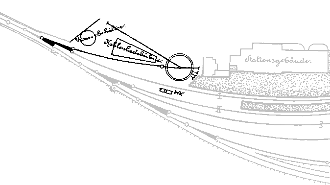

Krümelbahn
KrümelbahnDie Lokbehandlung in Solingen/Hauptbahnhof
Seit der Eröffnung der Zweigbahn von Solingen-Ohligs zum Weyersberg am 25. September 1867 besaß der Weyersberger Bahnhof eine Lokbehandlungsanlage.Mit dem Bau des neuen Südbahnhofes wurde hier für die Lokomotiven der Korkenzieherbahn die Möglichkeit geschaffen, ihre Betriebsvorräte zu ergänzen und zu drehen.
Ein geplanter Lokschuppen fiel dem Rotstift zum Opfer - wegen umfangreicher Fundamentarbeiten am Bahnhof selbst wurde der Lokschuppen von der KED Elberfeld gestrichen.

Die Gleisanlagen im Südbahnhof um 1890 verdeutlichen die Einfachheit: an der Ausfahrt Richtung Ohligs liegen der Wasserturm, die Kohleladebühne(Kohlebansen) und die 12m-Drehscheibe.